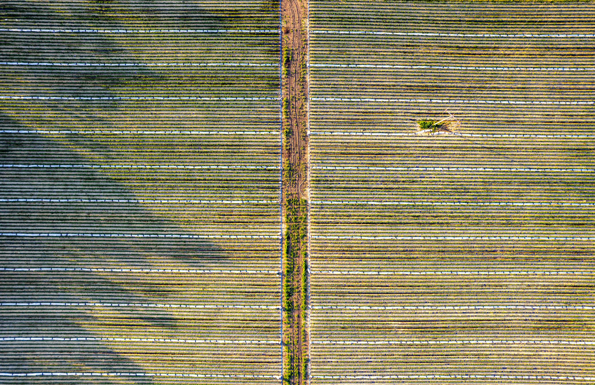

Renewable Energy
Our renewable energy projects focus on sustainable power...
Forestry and Land Use
Forestry and land use projects are at the heart of natural climate solutions...

Sustainable Agriculture
Our sustainable agriculture projects are designed to support resilient food systems...

Waste Management and Circular Economy
Our projects focus on capturing methane from landfills and promoting waste-to-energy initiatives...